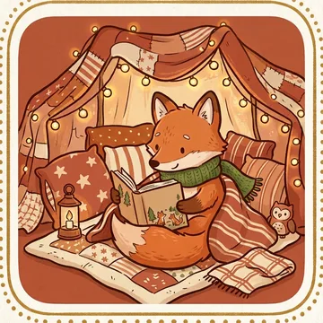
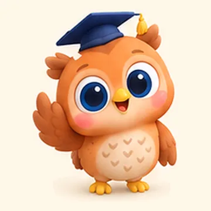

Мама, которая растит ребёнка с ИИ
Сделала три бота для своего сына — теперь они помогают и вашему. Всё работает прямо в Телеграме, ничего не нужно скачивать.
Почему это работает
- Короткие занятия по 10–15 минут — столько ребёнок держит внимание без слёз.
- Всё озвучено голосом — ребёнку не нужно уметь читать, он справляется сам.
- Звёзды, медали и награды вместо «неправильно» — хочется вернуться завтра.
- Маме — отчёты и аналитика: видно, что получается, а что подтянуть.

Сказочный конструктор
Новая сказка каждый вечер, где главный герой — ваш ребёнок, с его именем.
- 14 жанров
- 18 сказок-помощниц
- до 3 героев
- 2 голоса озвучки
- PDF для печати
Чем полезно
- Развивает речь и словарный запас: ребёнок слушает внимательнее, когда история про него.
- Сказки-помощницы мягко помогают пережить трудности: страх темноты, садик, ревность к малышу, засыпание, горшок, стеснительность.
- Жанры на любое настроение: чудеса, приключения, космос, детектив, богатырская, морская, про профессии.
- Нет сил читать — сказку прочитает тёплый женский или мужской голос под тихую музыку.
- Можно вписать брата, сестру или друга — герои пройдут приключение вместе.
Дальше 90 ₽ за сказку или пакет на месяц: 30, 60 или 90 сказок.
3 сказки бесплатно Получить сказку
Академия Рыжика
Буквы, звуки и цифры для детей около 5 лет — в игре с лисёнком Рыжиком.
- 25 уровней
- 15 видов заданий
- числа до 100
- 25 званий
- именной сертификат
Чем полезно
- Буквы: обвести пальчиком, слепить слог, собрать слово, найти первый звук, звуковая схема, рифма.
- Цифры: счёт предметов, пропущенное число, «больше-меньше», сложение и вычитание, знаки < > =.
- Основа — идеи Жуковой и Монтессори: сначала звук, потом буква, сложность растёт постепенно.
- Рыжик объясняет каждое задание голосом, за верный ответ — звёздочка и салют.
- Для родителей: аналитика по прогрессу, таймер занятия, режим «только буквы» или «только цифры».
990 ₽ один раз — без подписки, игра остаётся навсегда.
Демо-урок бесплатно: 24 часа Попробовать урок
Совёнок Тим
Подготовка к школе для детей 5–7 лет: задания с картинками и голосом.
- 362 задания
- 13 тем
- 3 уровня сложности
- 8 островов
- диплом в конце
Чем полезно
- Всё, что нужно к школе: счёт, звуки и буквы, речь, внимание, время, животные, растения, профессии, безопасность.
- В каждой игре 8 заданий вперемешку — обязательно математика, звуки и речь.
- Сложность подстраивается по каждой теме: 3 верных подряд — сложнее, 2 ошибки — проще.
- Ошибся — Тим подскажет и даст ещё попытку, без «неправильно».
- Каждое воскресенье маме приходит отчёт по темам с советами, во что поиграть дома.
Дальше 990 ₽ в месяц, без автосписаний: все острова, медали, раскраски и диплом.
8 заданий бесплатно Начать играть